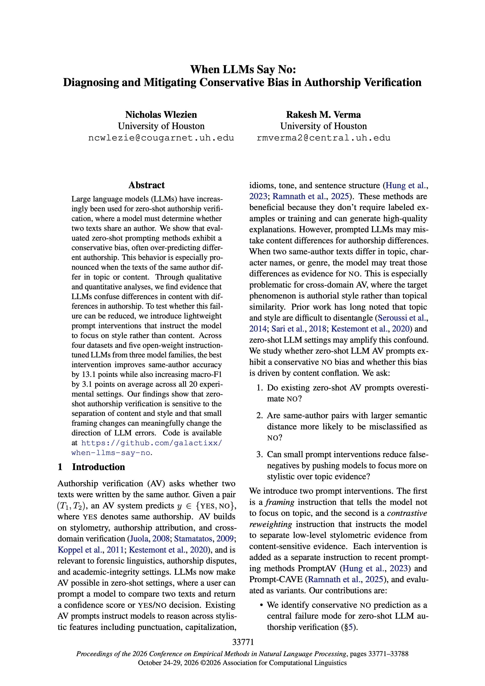

EMNLP 2026
When LLMs Say No: Diagnosing and Mitigating Conservative Bias in Authorship Verification
Proceedings of EMNLP 2026, pp. 33771–33788
AI & NLP Research
I study large language models and natural language processing, with a focus on authorship verification, model behavior, and reliable evaluation.
My research interests lie at the intersection of natural language processing and large language models. I am particularly interested in how model predictions are affected by prompts, how language models interpret stylistic evidence, and how to evaluate these systems more reliably.
In my recent work at EMNLP 2026, we examine a conservative bias in zero-shot authorship verification and investigate lightweight prompt interventions that encourage models to distinguish writing style from topic and content.
I am interested in developing more reliable ways to understand, evaluate, and improve language model behavior.
Bachelor's degree, Computer Science
Bachelor's degree, Economics · Minor, Mathematics

EMNLP 2026
Proceedings of EMNLP 2026, pp. 33771–33788